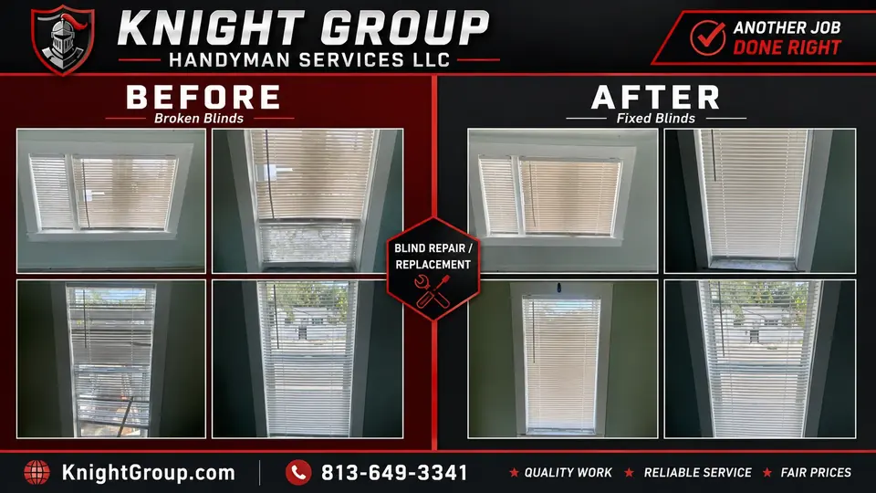

Faucet replacement
Kitchen and bath faucet swaps using existing supply lines where connections are sound.
Handyman scope notice: Knight Group provides handyman-scope fixture replacement, minor repairs, and troubleshooting using existing connections. We do not perform work requiring a licensed plumbing, electrical, HVAC, or general contractor license. If a job requires a permit or licensed trade contractor, we identify that before work begins and refer or coordinate appropriately.
Kitchen and bath faucet swaps using existing supply lines where connections are sound.
Homeowners across Safety Harbor, Clearwater, and Pinellas County call Knight Group when they want one accountable team instead of chasing separate vendors. We handle faucet replacement as part of our broader plumbing services work, with journeyman-level fixture experience on the handyman scope.
Every visit starts with confirming access, materials, and whether the repair fits handyman scope or needs a licensed trade referral. You get a written estimate before work begins, and we protect finished surfaces while work is in progress.
Typical jobs include prep and cleanup, hardware and consumables on smaller scopes, and coordination when drywall, paint, or carpentry must follow the primary repair. If you are comparing hourly vs flat-rate pricing, see our pricing pages or request a quote with photos for a defined scope.
Ready to schedule? Book online, call (813) 649-3341, or send a message with photos. We respond quickly during business hours and prioritize active leaks or safety issues when you call directly.



Frequently asked questions
Do you offer faucet replacement in Pinellas County?
Yes. Knight Group serves homeowners across Pinellas County with registered, insured handyman-scope work. Share photos or a short description and we will confirm fit before scheduling.
How do I get a price before work starts?
Request a free written estimate online or call (813) 649-3341. For defined small scopes we can often quote a flat rate; mixed punch lists may be hourly depending on access and materials.
Are you licensed and insured?
Knight Group Handyman Services LLC is registered and insured in Florida. We perform handyman-scope repairs and refer licensed trades when a permit or specialist is required.
How soon can you schedule?
Most standard requests schedule within one to two business days. Active leaks or urgent safety issues get priority when you call directly.
What should I prepare before your visit?
Clear access to the work area, note any prior repairs, and list parts you already purchased. Photos through the booking form help us bring the right tools on the first trip.
Ready to schedule?
Tell us what needs attention and where the property is located.